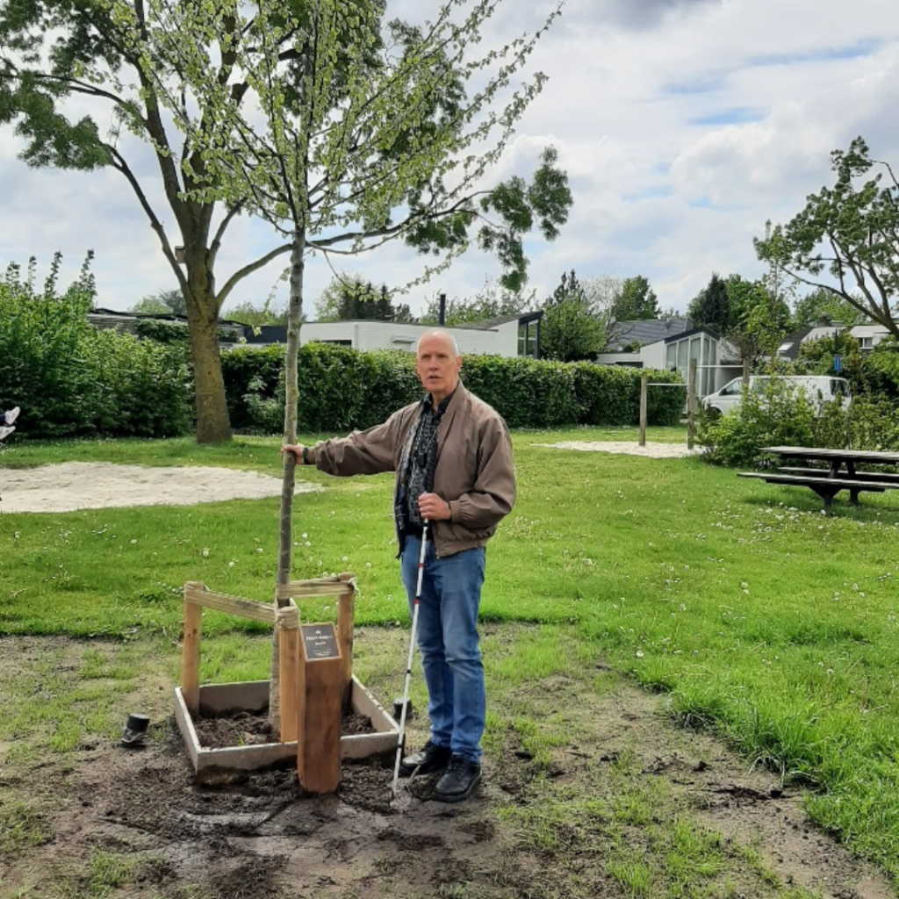
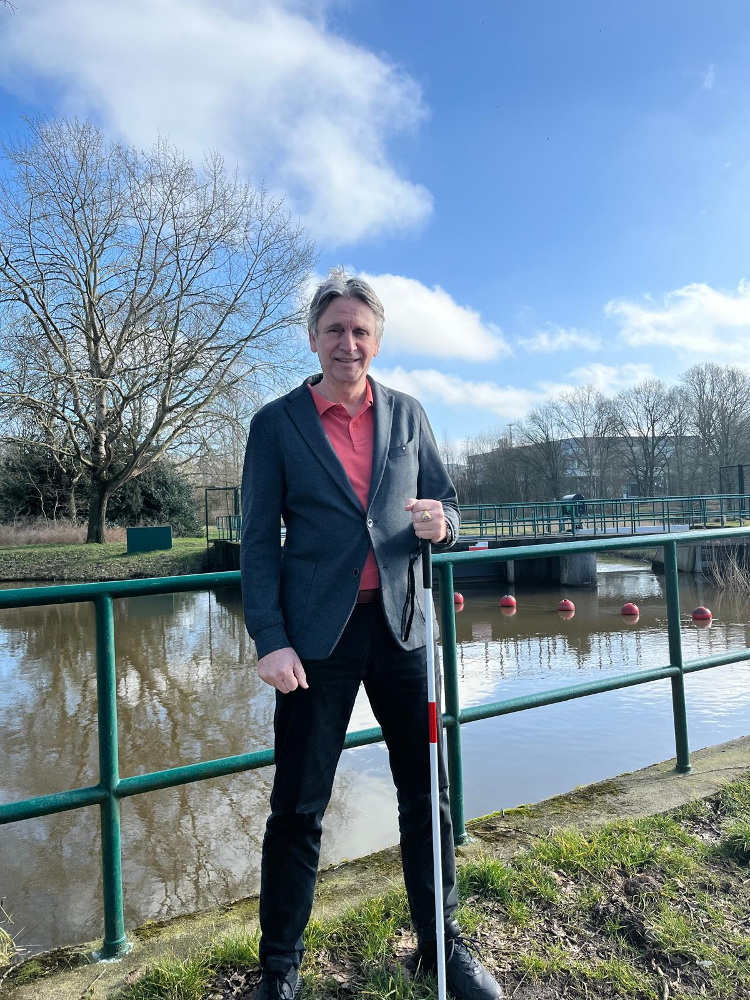
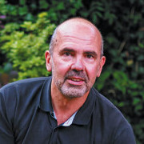
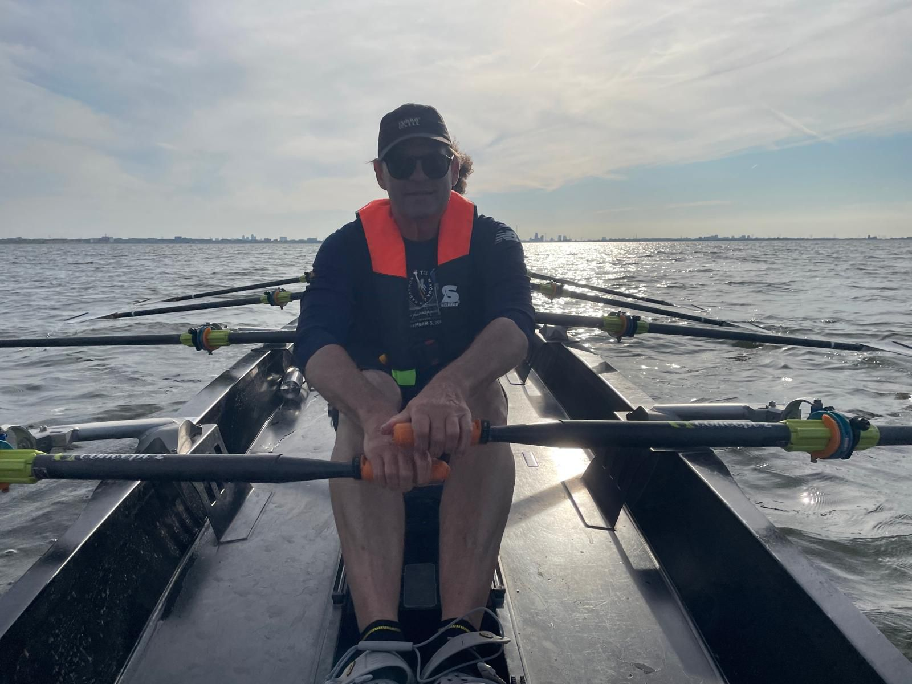

Onze missie
Stichting Videlio streeft naar een inclusieve samenleving waarin mensen met een visuele beperking gelijke kansen hebben op het gebied van persoonlijke ontwikkeling en sociale participatie.
Met een positieve en concrete aanpak volwaardig meedoen in de maatschappij.
Stichting Videlio is opgericht door mensen met een visuele beperking. Wij willen dat mensen met een visuele beperking meer zichtbaar zijn om volwaardig mee te doen in de samenleving met eigenwaarde en eigen regie.
Onze kernpunten zijn bewustwording, participatie, ontmoeting en innovatie. John Willemse en Peter Meuleman zijn de oprichters van Videlio. Zij zijn beide slechtziend en staan midden in de samenleving.
Stichting Videlio streeft naar een inclusieve samenleving waarin mensen met een visuele beperking gelijke kansen hebben op het gebied van persoonlijke ontwikkeling en sociale participatie.
Wij geloven in de kracht van samenwerking, ervaringsdeskundigheid en innovatie. Door bewustwording te creëren en praktische oplossingen te bieden, zorgen we voor een samenleving waarin VIPs volledig kunnen meedoen.
Mensen met ervaring, visie en motivatie om inclusie zichtbaar te maken.



